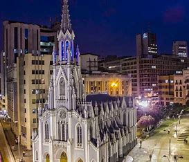
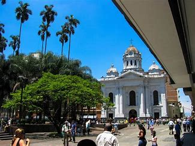
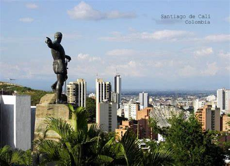
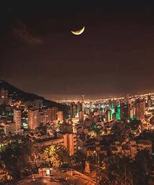
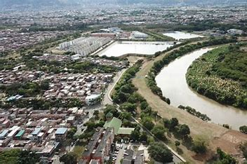
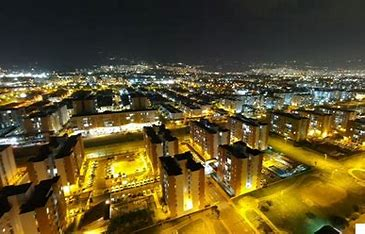
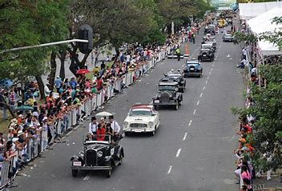
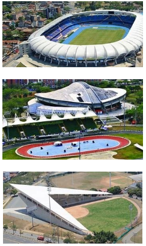

Galería de Imágenes


  
  
Tours
Eventos y Festividades
Descubre los eventos más importantes de Cali:
- Diciembre: La Feria de Cali, con conciertos, desfiles y competencias de salsa.
- Enero: Festival de Música del Pacífico "Petronio Álvarez", celebración de la cultura afrocolombiana.
- Agosto: Desfile de Carros Antiguos, un evento lleno de nostalgia y elegancia.
- Octubre: Festival Internacional de Arte de Cali, con exposiciones y performances.
Deportes
Podras visitar los estadios y complejos deportivos mas impresionantes de la ciudad donde se practican mas de 100 deportes diferentes y entrena la seleccion valle de los diferentes deportes a nivel nacional.
Cultura y Tradiciones
Conoce la riqueza cultural de Cali:
- Salsa: Cali es la capital mundial de la salsa, con academias y clubes para bailar.
- Artesanías: Productos únicos como mochilas, sombreros y joyería hechos por artesanos locales.
- Gastronomía: Disfruta de platos típicos como el sancocho de gallina, los aborrajados y la lulada.
- Festividades: Eventos como el Carnaval de Negros y Blancos y el Festival de Música Andina.